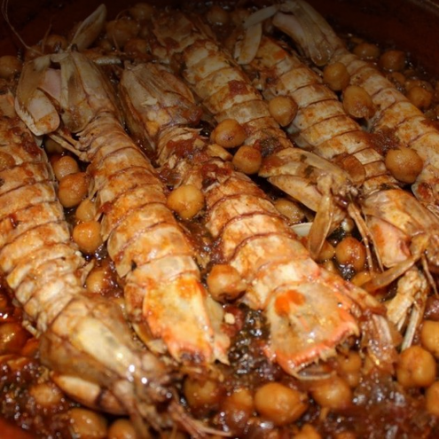

Receta de Garbanzos con galeras
Ingredientes:
- 600 g de garbanzos hervidos
- 16 galeras
- 2 dientes de ajo
- 2 tomates maduros
- 1 cebolla
- 1 rama de perejil
- 1 vasito de vino rancio
- pimentón
- zafra
- caldo de la cocción de los garbanzos
- aceite
- sal
Elaboración:
- Preparar los ingredientes
- Utilizar los garbanzos ya cocidos
- La galera bien fresca, eso sí. Y si está viva mejor todavía.
- Poner un buen chorro de aceite de oliva a calentar en una cazuela.
- Salar las galeras
- Ponerlas a freir
- Rallar los tomates maduros.
- Darle la vuelta para freírlas por ambos lados
- Empebrarlas un poco también y poner un poco de sal
- Una vez fritas reservelas
- Trinche la cebolla
- Y déjela dorar en el mismo aceite.
- Remover bien y dejar un par de minutos que se tueste un poco el ajo.
- Ahora, ya puede añadir el tomate.
- Un poco de sal. Y lo deje reducir unos 10 minutos.
- Y una cucharada de pimentón dulce. Si es de la "Vera" mejor
- Muy bien. Remover todo
- Ahora ponga el vino
- Si no lo tiene rancio, puede poner vino blanco. Dejar reducir y que se evapore el alcohol, unos 10-15 minutos vigilando que no se queme. Debe quedar un sofrito intenso y casi caramelizado
- Bien revueltos con el sofrito.
- Y finalmente el agua o el caldo, si es mejor de pescado. No se pase, ponga un par de vasos aproximadamente. La intención de hacer el plato tenga un poco de suquet, pero no demasiado
Imagen de la receta:

Esta recete es perfecta para cualquier ocasión, espero que os guste!
Puedes encontrar otras recetas en mi pagina principal pàgina principal.